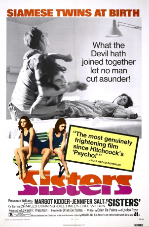
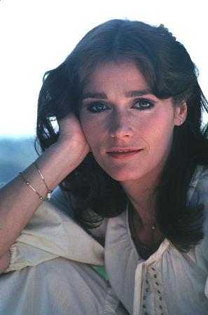
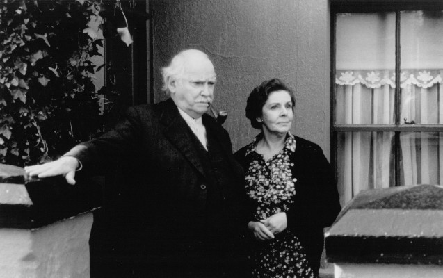
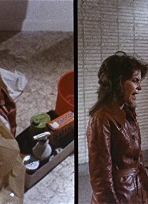

#8932 Die Schwestern des Bösen
Alternativ: Sisters
 
 IMDB-Wertung: 7.0 / 10
IMDB-Wertung: 7.0 / 10  Metascore: 0
Metascore: 0 
The Staten Island apartment of lovely model Danielle becomes the scene of a grisly murder that is witnessed by her neighbor, Grace, a reporter. But the police don't believe her story, so it's up to Grace to solve the murder mystery on her own.
Jahr: 1972
Dauer: 92 Minuten
FSK: 18
Land: USA Studio: AIPTonspuren: DD5.1 - ,
Untertitel: Deutsch, Englisch,
Auflösung: 1080p (1920x1080) Größe: 9082 MB
Genre: Thriller, Horror, Mystery
Regisseur:  Brian De Palma
Brian De Palma
Drehbuch: Brian De Palma
Soundtrack: Bernard Herrmann
Darsteller:
-  Margot Kidder als Danielle Breton / Dominique Blanchion
- Jennifer Salt als Grace Collier
- Charles Durning als Joseph Larch
- William Finley als Emil Breton
- Lisle Wilson als Phillip Woode
-  Barnard Hughes als Arthur McLennen
- Olympia Dukakis als Louise Wilanski (uncredited)
- James Mapes als Guard (uncredited)
- Mary Davenport als Mrs. Peyson Collier
-  Dolph Sweet als Detective Kelly
- Bobby C. Collins als
- Cathy Berry als Lobster child (uncredited)
- Catherine Gaffigan als Arlene (uncredited)
- Justine Johnston als Elaine D'Anna (uncredited)
- Laun Maurer als Druggist (uncredited)
- Bob Melvin als Extra (uncredited)
- Burt Richards als Hospital Attendant (uncredited)
- Sealo als Extra (uncredited)
Datei: X:\FSK18-1900-1999\Schwestern des Bösen, Die (1972, FSK18, 1920x1080).mkv seit 08.05.2018
Festplatte: FSK18
 Es gibt insgesamt 108 Filme in der Gruppe 'FSK18-1900-1999'
Es gibt insgesamt 108 Filme in der Gruppe 'FSK18-1900-1999'